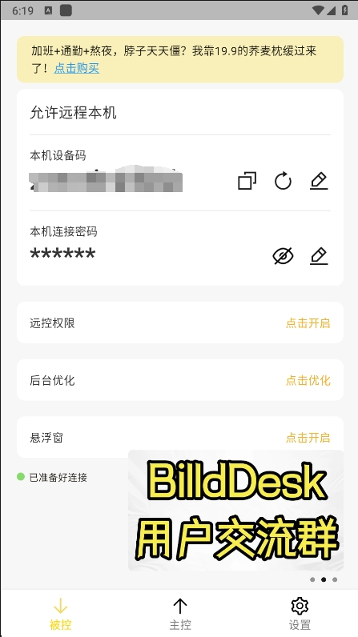
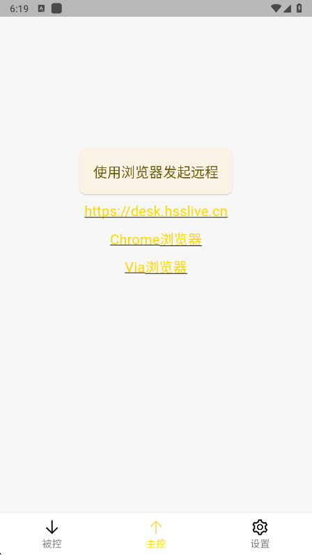
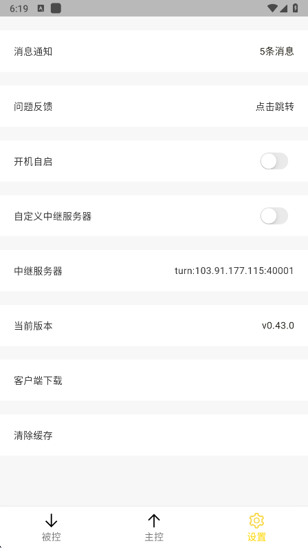
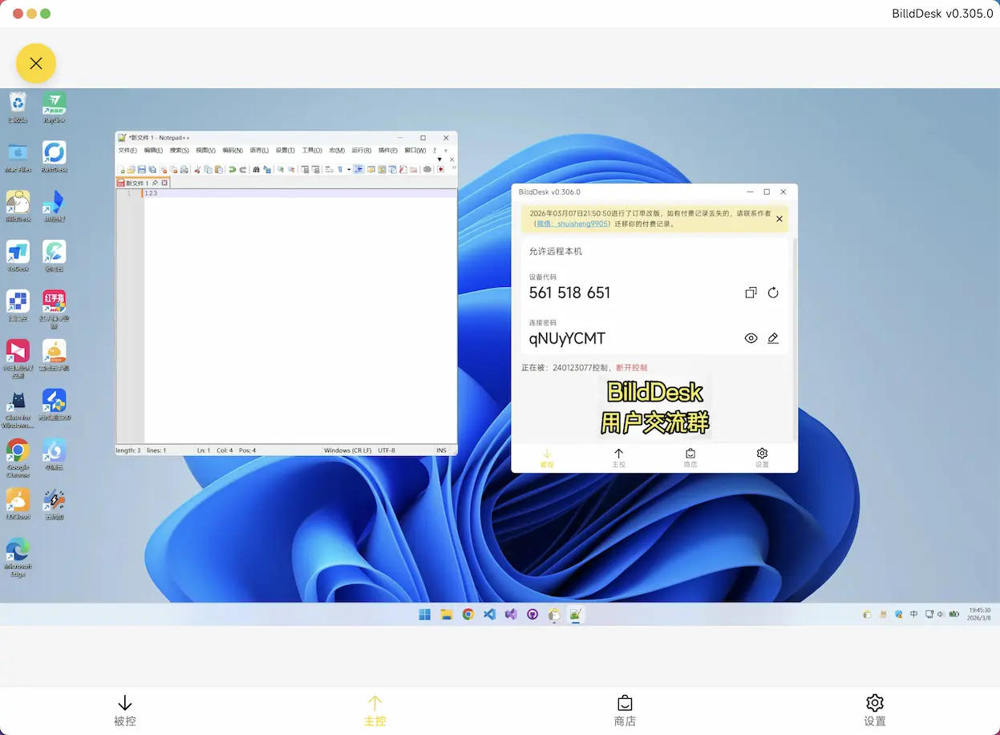
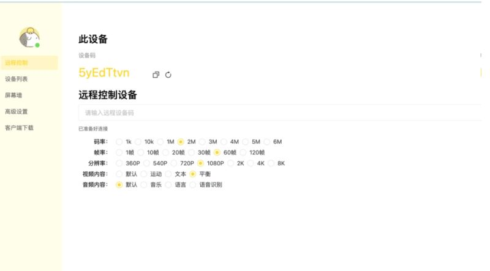

开源项目 · GitHub 4000+ Star
把远程桌面装进口袋，
把远程桌面装进口袋，
手机电脑互控不设限
BilldDesk 是一个用 WebRTC + Flutter + Vue3 + Node.js 搭起来的开源远程桌面工具：电脑控电脑、手机控电脑、手机控手机、电脑控手机，四种组合都走得通，连接时长与画质不设上限。
先看真实界面
安卓端三个核心页面，加上电脑端与网页端的实拍，装之前心里有数。





功能清单：把商用远控的付费项做成了免费
和常见商业远控的免费版对比，下面这些在 BilldDesk 里都不设门槛。
跨端互控
电脑控电脑、手机控电脑、电脑控手机、手机控手机，网页端浏览器打开也能发起。
文件传输
主控与被控之间互传文件，跨设备取资料不用再绕网盘中转。
隐私屏 / 虚拟屏
被控端黑屏但远控照常；还能创建多个虚拟屏，多屏任务互不干扰。
屏幕墙与群控
一屏同时查看多台设备，支持单控与批量操作，管机房、管工作室省事。
自定义设备码
设备码与连接密码都能改，好记的号码自己设，连接凭据不依赖账号。
画质可调
码率 1k–6M、帧率 1–120 帧、分辨率 360P–8K 逐档可调，弱网也能顺滑。
硬件编解码
NVIDIA、AMD 显卡 GPU 编解码加速，H265 / H264 / AV1 / VP8 / VP9 都支持。
自建服务器
API、WebSocket、中继地址都能指向自己的服务器，信令与流量全在自己手里。
四种连接组合，一套凭据走通
被控端打开 App 就能看到设备码与连接密码，控制端填进去就能连。
电脑
电脑控电脑
手机
手机控电脑
手机
手机控手机
电脑
电脑控手机
手机控手机还可以免装客户端：被控方保持在线，控制方用手机浏览器打开网页端发起，走的就是网页端能力。
常见问题
装机之前被问得最多的几件事。
BilldDesk 收费吗？有连接时长限制吗？
基础功能免费，连接时长、画质、并发这些常见商业远控拿来当付费墙的项目，在 BilldDesk 这里都不设门槛。项目另有 Pro 版本线，对普通用户同样免费，主要面向开发者提供源码订阅。
安卓 13 上无障碍开关点不动怎么办？
这是系统对侧装应用的"受限设置"拦截，不是软件坏了：长按桌面图标进应用信息，点右上角菜单里的"允许受限设置"，再回辅助功能列表打开服务开关即可。
画面卡顿或者白屏怎么调？
先分清是连接问题还是画质问题。白屏多与编解码器兼容有关，在高级设置里逐个关 H265、AV1、VP9 试验；卡顿则先测两端带宽，码率别设得高于实测网速，弱网时换一个近一点的中继服务器。
数据安全吗？流量走谁的服务器？
默认走项目方在线服务；介意流量过第三方的话，它是开源项目，服务端可以自己部署，客户端里把 API、WebSocket 与中继地址改成自己的服务器即可。连接凭据靠设备码 + 密码鉴权，密码建议改成自己的并定期更换。
项目还在活跃更新吗？
项目 2024 年 2 月在 GitHub 提交首版，由作者一人持续开发，Star 数已过 4000。要注意它尚未发布稳定版，版本之间可能有破坏性改动，控制端与被控端建议保持同版本。
装一份，把家里和公司的电脑都连起来
安卓安装包约 50 MB，装完几分钟就能发起第一次远程。